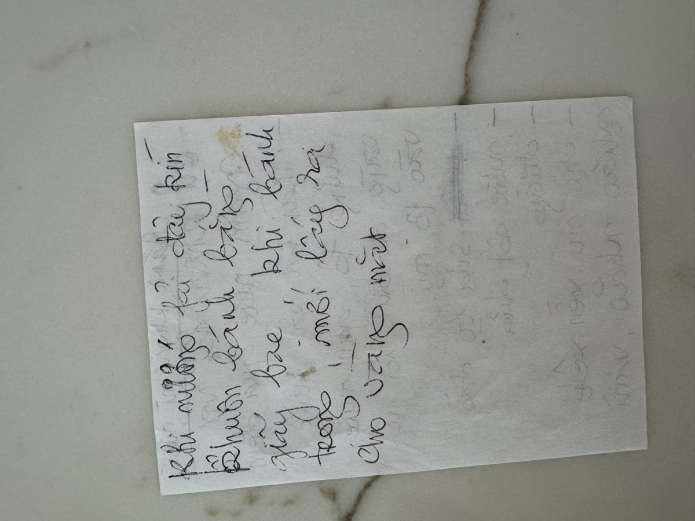

← Back to recipes

Chè Khoai Mì Nướng
Baked Cassava Cake
From Mẹ — Oanh
Nguyên liệu · Ingredients
- 2 pounds cassava (khoai mì), peeled
- 1 can (13.5 oz) coconut milk (nước cốt dừa)
- Sugar, to taste (đường)
- Pinch of salt
- Aluminum foil for covering
Cách làm · Instructions
- Peel the cassava and soak it overnight in cold water. This softens the flesh and removes any bitterness.
- Drain the cassava and squeeze out as much water as possible. You can grate it finely or pulse it in a food processor until it reaches a coarse, crumbly texture. Squeeze again through cheesecloth if it still feels very wet.
- In a large bowl, combine the grated cassava, sugar, coconut milk, and salt. Mix and knead everything together until well combined.
- Preheat your oven to 350°F (175°C). Grease a baking pan or line it with parchment paper.
- Pour the cassava mixture into the prepared pan and press it down evenly. Cover tightly with aluminum foil — this traps the steam and helps the inside cook through before the top browns.
- Bake covered with foil. When the cake is set inside, remove the foil and continue baking until the top turns golden brown.
- Let it cool in the pan before cutting. Cut into squares or diamond shapes and serve.
Công thức gốc · Original handwritten recipe

❦
A recipe from Mẹ's kitchen